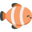

<ion-menu side="start" menuId="first" contentId="main">
	<ion-header>
		<ion-toolbar color="primary">
			<ion-title>Menu</ion-title>
			<ion-buttons slot="start">
				<ion-menu-button></ion-menu-button>
			</ion-buttons>
		</ion-toolbar>
	</ion-header>
	<ion-content>
		<ion-list>
			<ion-item href="/restaurants">
				<ion-avatar slot="start">
					
				</ion-avatar>
				<ion-label>Restaurants</ion-label>
			</ion-item>
			<ion-item>
				<ion-avatar slot="start">
					
				</ion-avatar>
				<ion-label>Recettes</ion-label>
			</ion-item>
			<ion-item>
				<ion-avatar slot="start">
					
				</ion-avatar>
				<ion-label>Poissons</ion-label>
			</ion-item>
			<ion-item>
				<ion-avatar slot="start">
					
				</ion-avatar>
				<ion-label>Contact</ion-label>
			</ion-item>
		</ion-list>
	</ion-content>
</ion-menu>

<ion-router-outlet id="main"></ion-router-outlet>
